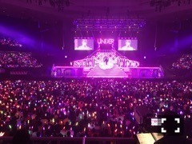

| 2016/08 21 Sun | ひめたん-0o0-その663 |
全国ツアー福岡公演終わりました！
これにて地方公演は全て終了！
静岡から始まり、
新体制になって大阪・名古屋・仙台・福岡
来てくださった皆さんありがとう！
みて！！
このみり愛ちゃんがもう！！
福岡会場、熱気が凄かった～
皆さん大丈夫だったかしら？
気分悪くなったりしなかったかな( ´ ･ω･ ` )
外もまた暑かったんだよね。
福岡国際センターも
毎年お邪魔させて頂いているけれど
客席からステージまでの距離が
近い感じがして好きです。
あと我の地元、広島に近いので
勝手に親近感～
さて、ラスト神宮3days!
みんなで良いものにするので
楽しみにしてて下さい。
いくちゃんがお部屋遊びに来てくれて
夜な夜なお喋りしたよ～(^o^)
そして20日は衛藤・北野・中元で
God Bless Saturday公開生放送でした
ゴブサタ！
現場に来てくれた人も
FM yokohama聞いてくれた人も
ありがとう～
夏を感じる素敵なイベントになりました
お足元の悪い中、たくさんの方が
観覧来てくださって嬉しかったです！
日曜の夜は、らじらー！サンデー
「妄想ダイアリー」
皆さん楽しんでいただけてますか？
お題は毎週変わるので要チェックですよ～
そしてライブの感想や
この夏休みにあった色んな出来事
是非メールで教えて下さい( ˆωˆ )
お便りの宛先はこちら
次回の放送は9/4です！
21日は乃木坂46結成5周年。
私はどこで道を踏み外したんだろう(笑)と
思ったこともたくさんありますし
乃木坂になってなかったらどうなってたか
未だに時々考えることがあります
毎日お仕事のことで悩んじゃうくらい
私にとって乃木坂46は大きなものだし
このグループの一員になれたことは
ものすごくありがたいことなんだけれど
それをより強く実感するのはきっと
もうちょっと先の話なのかな、と。
それだけ私と世間の皆さんとの感覚に
ズレがあるというか、
私がついていけてないというか、
気付いたら大きくなっていたなというか。
今はただ、目の前のお仕事に感謝して
ひとつずつ丁寧に取り組むだけ。
今までの積み重ねがあるから今日を迎え、
そして今後に繋がるんだと信じて
日々精進していきます！
いつも私たち乃木坂46を
応援して下さっている皆さん、
本当にありがとうございます！
アイドルは芸能界の中でも
色んなフィールドに挑戦できることが
ひとつの強みなのかなあと。
完成形も、そこに至るまでの成長過程も、
全部エンターテインメントとして
お届け出来たらいいなと思っているので
応援していて
楽しいことだけじゃないかもしれませんが
これからも一緒に夢を追いかけて下さったら
幸せです( ˇωˇ )
今のグループとしての夢って何だろう。
これからもよろしくお願いします！

この一年で一番の思い出は
個人的にはアンダーライブ武道館。
～お知らせ～
雑誌
8/23 BRODY
8/24 ストリートジャック
ラジオ
8/22 広島DAYS!
8/26 カウントダウン魂
イベント
8/22 カウントダウン魂公開収録
9/23 東京国際ブックフェアトークショー
リリース
9/30 NOGIBINGO!6 BD&DVD
明日22日は広島に行きます＼(^o^)／弾丸
和田・佐々木・中元の3人です
フタバ図書さん選抜ですね！素敵！
広島近隣にお住いの皆さんは
良かったらアルパークで行われる公開収録
遊びに来て下さい～
地元民というか地元の学生たちは
アルパと呼んでいました。懐かしい。
行くと必ず誰かしら知り合いに遭遇する。

まいやん、真夏さん
お誕生日おめでとう♡
(＊´・ω・＊)
コメント(1008)
2016/08/21 23:42